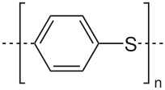

Grasshoppermouse
Ed Hagen
Recent posts
Categories
All
(19)
science
(17)
stats
(6)
Is evolutionary psychology impossible?
science
Subrena Smith recently argued that “evolutionary psychology, as it is currently understood, is…impossible” (Smith 2019). I agree with most of Smith’s premises, which are…
Jan 21, 2020
Ed Hagen
About 90% of the genome is junk, which is very informative about ancestry but says little about biology
science
The genome, taken as a whole, has a profound influence on our biology. Many scientists, myself included, see it as a blueprint for the organism, or perhaps more accurately…
Jul 27, 2019
Ed Hagen
Should scientific publishing move to Github and friends?
science
TL;DR: Open access publishing has very high administrative overhead and is therefore too expensive. Github and similar services have substantial and perhaps insurmountable…
Jul 12, 2019
Ed Hagen
A theory of natural selection, 5th century BC
science
How came the bodies of animals to be contrived with so much art, and for what ends were their several parts?
Jun 20, 2019
Ed Hagen
Measles, mothers, leadership, and the evolution of big brains
science
Nancy Pelosi recently won a major conflict with Trump over border wall funding, and her victory flipped the media narrative. Instead of the insider who was out-of-step with…
Mar 21, 2019
Ed Hagen
Seven reasons why most Major Depression is probably not a brain disorder
science
Virtually all mental health researchers accept that Major Depression (MD) is a mental disorder, i.e., a brain dysfunction. I argue that this widespread belief should instead…
Dec 16, 2018
Ed Hagen
Suicide and #MeToo
science
What single recent event in a woman’s life is most strongly associated with her subsequent suicide attempt? A sexual assault.
Oct 9, 2018
Ed Hagen
Most shooters are suicidal. Would arming teachers deter them?
science
The FBI recently released a report on pre-attack behaviors of active shooters. The report analyzes the 63 shooters between 2000 and 2013 who had case files, which contain…
Aug 23, 2018
Ed Hagen
The universal genetic program and the custom-built phenotype: implications for race and sex
science
The human genome, for many, represents differences,
essential
differences. The real spectre that such differences fuel racism, sexism, and eugenics has lead much of academia…
Jun 25, 2018
Ed Hagen
While it may be true that Evolutionary Anthropologists consider themselves scientists…
science
Casey Roulette, a former PhD student of mine who is now an assistant professor at San Diego State University, recently received an email from a member of the Biology…
Mar 3, 2018
Ed Hagen
Our statistics don’t suck, our theories do
science
stats
Every genuine test of a theory is an attempt to falsify it, or to refute it.
Karl Popper, 1963.
Jan 16, 2018
Ed Hagen
Data dredging is the Dionysian soul of science
science
stats
Yin and Yang. Apollo and Dionysus. Heaven and Hell. Id and Superego. Reason and Emotion. Spock and McCoy. Many intellectual and moral frameworks are structured around two…
Jan 1, 2018
Ed Hagen
Academic success is either a crapshoot or a scam
science
stats
Nature
just published five brief commentaries by statisticians on the reproducibility crisis:
Dec 5, 2017
Ed Hagen
PCA: new coordinate system, same data
stats
There are many ways to teach Principal Component Analysis (PCA). This way is mine.
Nov 15, 2017
Ed Hagen
Put your data in an R package
stats
Updated: Feb 26, 2025
Oct 18, 2017
Ed Hagen
Monkey butts, menstrual cycles, sex, and the color pink. The statistical crisis in science
science
stats
A couple of years ago, when I was starting a new project that used cross-national data, I picked up a popular statistics textbook by Andrew Gelman and Jennifer Hill because…
Jun 27, 2015
Ed Hagen
Pavlov’s dogs, dopamine and drug use
science
Findings from studies investigating only stimulants (generally cocaine or amphetamine) were often discussed as though they applied to all addictions, even though there was…
May 16, 2015
Ed Hagen

I’m a sucker for a good theory
science
I’m a sucker for a good theory.
May 15, 2015
Ed Hagen
Is pregnancy immunosuppression a myth?
science
My grad student Caity Placek is working on behavioral immunity during pregnancy. Behavioral immunity refers to psychological adaptations that help defend against pathogens;…
Apr 19, 2015
Ed Hagen
No matching items